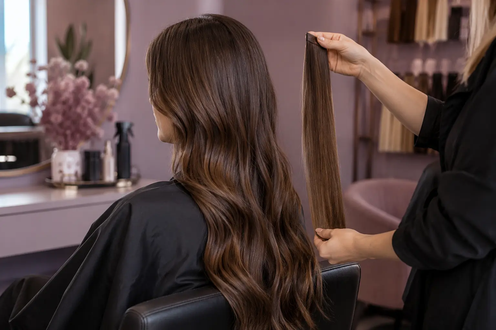

Plaukų priauginimas: tvirtinimo metodas, svoris ir priežiūros poreikis
Autorius: Madbeauty redakcija · Numatyta 2026 m. lapkričio 12 d. 16:00 (Lietuvos laiku)
Palyginkite plaukų priauginimą keratino jungtimis ir lipniomis juostelėmis: tvirtinimą, norimą vaizdą, priežiūrą, korekciją bei nuėmimą.

Geriausias plaukų priauginimo būdas priklauso nuo norimo pokyčio ir konkrečios sistemos. Lyginkite ne vien metodo pavadinimą: išsiaiškinkite, kaip tvirtinamos sruogos, kiekio ir ilgio reikia, kur bus išdėstyti tvirtinimai, kokios priežiūros reikės ir kaip sistema nuimama.
Kuo skiriasi Pre-Bonded ir GL Tapes pavyzdžiai?
Great Lengths gamintojo pavyzdyje Pre-Bonded sistema naudoja atskiras priauginamas sruogas su iš anksto paruošta keratino jungtimi. GL Tapes sistemoje naudojamos plokščios lipnios juostelių panelės, tarp kurių fiksuojama natūralių plaukų dalis. Tai dviejų konkretaus gamintojo sistemų principų palyginimas, o ne visų rinkoje esančių priauginimų apibrėžimas. Daugiau apie šias sistemas pateikia Great Lengths tvirtinimo metodų aprašas.
Vien šis skirtumas nepasako, kuri sistema jums tinkamesnė. Paklauskite, kaip konkretaus pasiūlymo tvirtinimo vietos, plaukų kiekis ir pasirinktas ilgis atitinka jūsų tikslą bei natūralių plaukų būklę. Vienos sistemos išvados neperkelkite kitai.
Pasirinkite pagal norimą pokytį
- Jei norite daugiau ilgio, nurodykite, kokio pokyčio siekiate, ir išsiaiškinkite, kokio ilgio bei kiekio priauginamos sruogos numatytos. Aptarkite, kaip jos bus suderintos su jūsų plaukų ilgiu ir forma.
- Jei norite vizualiai tankesnių plaukų, bet ne didesnio ilgio, pasakykite tai aiškiai. Tada palyginkite, kokį kiekį ir tvirtinimų išdėstymą siūlo kiekvienas pasiūlymas, užuot lyginę vien metodo pavadinimus.
- Jei svarstote abu pokyčius, atskirai aptarkite ilgį ir tankį. Taip lengviau pamatyti, ar lyginate vienodą paslaugos apimtį.
Palyginimo sąrašas prieš renkantis
- Tikslas: ilgesni plaukai, daugiau tankio ar abu pokyčiai?
- Sistema: kokios konkrečios jungtys ar panelės naudojamos ir kaip jos tvirtinamos?
- Kiekis ir išdėstymas: koks ilgis bei kiekis siūlomas ir kur numatomi tvirtinimai?
- Svoris ir tempimas: kaip įvertinamas pasirinkto kiekio bei tvirtinimų poveikis jūsų natūraliems plaukams? Vien iš metodo pavadinimo individualaus tinkamumo nustatyti negalima.
- Priežiūra: kokie nurodymai taikomi būtent šiai sistemai ir ar jie dera su jūsų kasdiene rutina?
- Korekcija ir nuėmimas: kokie darbai įtraukti, kada planuojamas pakartotinis vizitas ir kaip bus nuimama konkreti sistema?
Svoris, trauka ir priežiūros ribos
Plaukus tempiantys stiliai, įskaitant priauginimą, gali kelti traukos sukeltos alopecijos riziką, jei trauka ilgalaikė. Tai nėra teiginys, kad kiekvienam priauginimas sukels plaukų slinkimą: rizika priklauso nuo konkrečios situacijos. Amerikos dermatologų akademija aprašo traukos ir plaukų slinkimo ryšį; jos plaukų formavimo rekomendacijos taip pat nurodo, kad mechaninė trauka ir karštis gali pažeisti plaukus, o priežiūros patarimai priklauso nuo jų tekstūros. Jei šukuosena ar tvirtinimai skausmingai tempia, to nelaikykite būtina metodo dalimi — aptarkite situaciją su paslaugą atlikusiu specialistu.
Nėra pagrindo visoms sistemoms priskirti vienodą korekcijos ar nešiojimo intervalą. Paprašykite konkretaus pasirinkto metodo priežiūros plano. Nuėmimo būdas taip pat priklauso nuo sistemos: Great Lengths nurodo skirtingas profesionalias priemones savo Pre-Bonded jungtims ir Tapes klijams bei apmokyto specialisto poreikį. Todėl nenaudokite bendro naminio nuėmimo recepto. Gamintojo DUK apie jo sistemų nuėmimą.
Kaip palyginti kainą ir pasiūlymo apimtį?
Lyginkite pasiūlymus pagal tą patį norimą ilgį ar tankį ir tą pačią paslaugos apimtį. Pasižymėkite, ar nurodytas priauginamų plaukų kiekis, tvirtinimo darbai, formos užbaigimas, vėlesnė korekcija ir nuėmimas. Jei kuri nors dalis neaprašyta, palikite ją kaip atskirą palyginimo klausimą — neįtraukta paslauga neturėtų būti numanoma.
Iliustracinis pasirinkimo pavyzdys
Tarkime, norite tik vizualiai tankesnių, panašaus ilgio plaukų. Viename pasiūlyme numatytas ilgio pokytis, kitame siūlomas mažesnis pokytis. Kol neaiškus kiekis, tvirtinimų išdėstymas, priežiūra ir nuėmimas, jų negalima sąžiningai palyginti vien pagal tai, ar įvardytos keratino jungtys, ar lipnios panelės. Tai hipotetinė situacija, ne tikro kliento atvejis.
Prieš apsispręsdami vienoje vietoje užrašykite savo tikslą, siūlomą ilgį ir kiekį, tvirtinimo sistemą, priežiūros planą, korekcijos sąlygas, nuėmimo būdą ir visą kainos apimtį. Toks palyginimas padeda matyti, ką iš tikrųjų siūlo kiekvienas variantas.
Procedūrų aprašai kataloge: Plaukų priauginimas. Miestą ir realaus teikėjo pasiūlymą pasirinkite kataloge, kai tokia pasiūla pateikta.
Susiję gidai
Šaltiniai
- AAD · plaukus tempiantys stiliai · www.aad.org
- AAD · formavimas ir plaukų pažeidimas · www.aad.org
- Great Lengths: tvirtinimo sistemų skirtumas · www.greatlengths.com
- Great Lengths: profesionalus sistemų nuėmimas · www.greatlengths.com